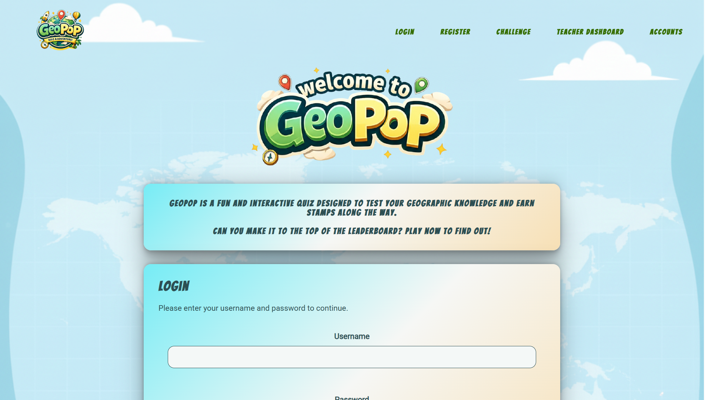
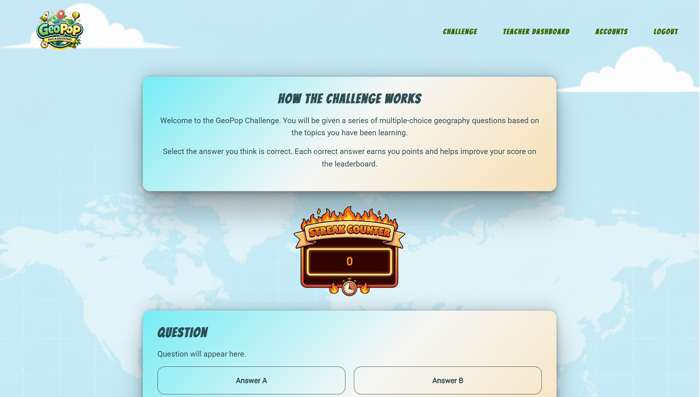
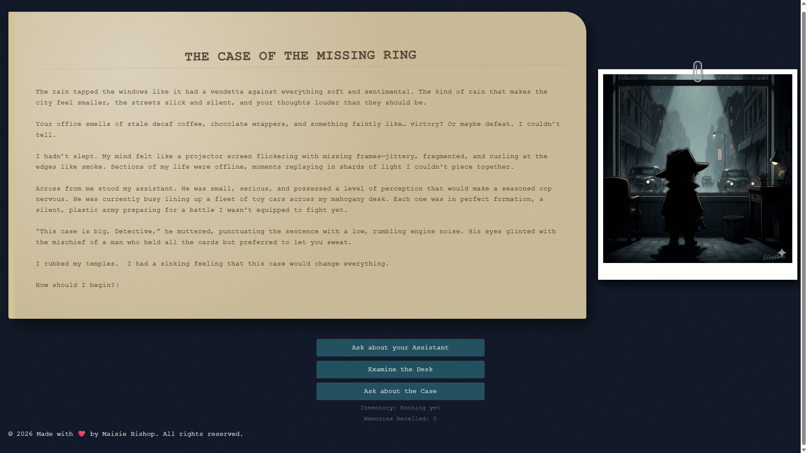

<link rel="stylesheet" href="style.css">
<!DOCTYPE html>

<html lang="en">
   
    <head>
        <meta charset="UTF-8">
        <meta name="viewport" content="width=device-width, initial-scale=1.0">
        <title> Maisie Bishop </title>
        <script src="index.js" defer></script>
        <link rel ="icon" href="img/micon.ico" type="image/x-icon">
        <meta name="description" content="Learn more about Maisie Bishop.">
        <meta name="author" content="Maisie Bishop">
         <meta name="keywords" content="About Maisie, Professional Experience and more">
    </head>
  <!--- NAVIGATION BAR --->  
    <header class="hero hero--small">

<nav>

       <input type="checkbox" id="nav-toggle" class="nav-toggle">
  
  <label for="nav-toggle" class="nav-toggle-label">
    <span></span>
  </label>
<ul>
<li><a href="/index.html">Home</a></li>
<li><a href="/cv.html">Professional Experience</a></li>
<li><a href="/projects.html">My Projects</a></li>
</ul>
</nav>
<div class="hero-content">

<h1>My Projects</h1>

</div>
</header>

            <!--- MAIN CONTENT/TITLE --->
    <main>
        <body>
          

           
            <div class="container">
    <article class="role">
    <h2><strong>Project Beta: Cybersecurity Dashboard</strong></h2>
    <p class="role-meta">
      <strong>La Fosse Academy</strong><br>
     

 <video id="beta" poster="img/riskradar.png" width="max-width" height="340" controls>
    <source src="img/BetaVid.mp4" type="video/mp4">
    <!-- <source src="BetaVid.ogg" type="video/ogg"> -->
        Your browser does not support the video tag.
    </video>
    

    <p>
      The capstone project of my intensive training with La Fosse Academy concluded with a two-week group project, designing and building
      a solution end-to-end. My team chose to create a cybersecurity dashboard for small businesses, making it easier for 
      non-technical users to understand and manage their cybersecurity risks.
      We built an MVP for a web-based dashboard that provided an overview of the business’s cybersecurity landscape, 
      including risk assessments, threat monitoring, and actionable insights. The project culminated in
      presenting the final product to clients in a formal stakeholder presentation.
    </p>

    <p> <a href="https://github.com/harleendhillon25/ProjectBeta" class="btn-secondary" target="_blank">View on GitHub</a></p>
  </article>
</div>

<div class="container">
  <article class="role">
    <h2>Project Alpha: Non-Stem Educational Game</h2>
    <p class="role-meta">
     <strong>La Fosse Academy</strong><br>
    </p>

   




    <p>
      This was group project (5 members) where we were tasked to design and build an educational game for a non-stem subject. We created an MVP for interactive web-based 
      educational platform designed to improve student engagement and knowledge retention in the non-STEM subject Geography through teacher-created quizzes. This was built over the course of 4 days, with the final 
    product presented in the style of a formal stakeholder presentation.    </p>

    <p>
        <a href="https://github.com/Maisie90/alpha-project" class="btn-secondary" target="_blank">View on GitHub</a>
    </p>
  </article>
  </div>

  <div class="container">
  <article class="role">
    <h2>Noir Style Choose Your Own Adventure</h2>
    <p class="role-meta">
     <strong>Personal project</strong><br>
    </p>

   

     <p>
     This was a personal project where I designed and built a simple frontend only "choose your own adventure" game 
     in the style of a noir detective story. The game was built using HTML, CSS, and JavaScript, 
     and featured a branching narrative with multiple endings based on the player's choices. 
     This was designed to be an anniversary gift for my partner, so it contains references to our lives, and was built over the course of a few weeks in my own time.
     The project was a fun way to apply my coding skills while also exploring my interest in storytelling and game design.
    </p>

        <p>
        <a href="https://github.com/Maisie90/text-adventure-game" class="btn-secondary" target="_blank">View on GitHub</a>
        <a href="https://maisie90.github.io/text-adventure-game/" class="btn-secondary" target="_blank">Play the Game</a>
    </p>
  </article>
  </div>
</section>
                   
            </div>
        <footer>
                <p>© 2026 Maisie Bishop. All rights reserved.</p> <a href="https://www.linkedin.com/in/maisie-bishop-5b286761/" target="_blank">LinkedIn</a> | <a href="https://github.com/Maisie90" target="_blank">GitHub</a>
                </footer>